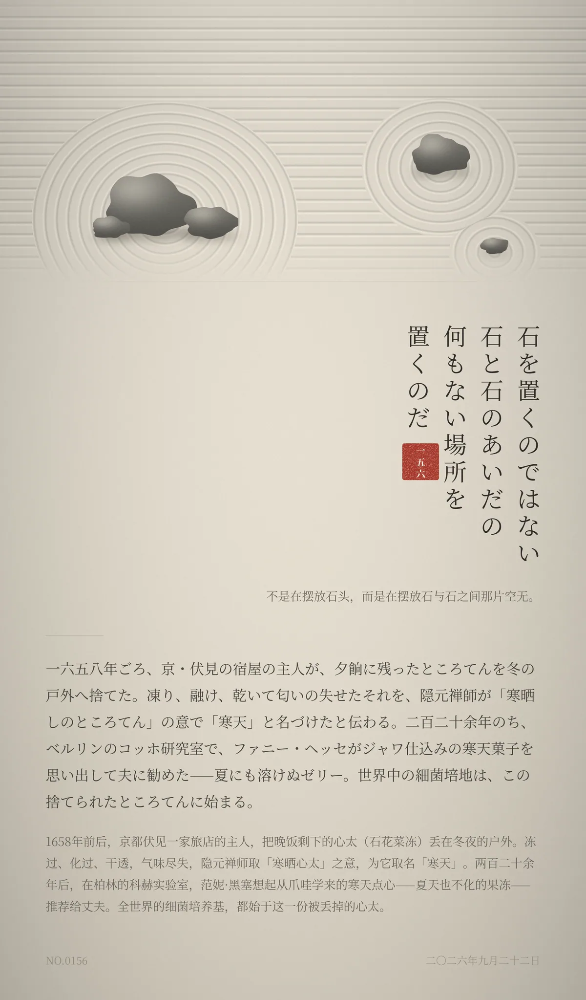

石を置くのではない。石と石のあいだの、何もない場所を置くのだ。（不是在摆放石头，而是在摆放石与石之间那片空无。）
一六五八年ごろ、京・伏見の宿屋の主人が、夕餉に残ったところてんを冬の戸外へ捨てた。凍り、融け、乾いて匂いの失せたそれを、隠元禅師が「寒晒しのところてん」の意で「寒天」と名づけたと伝わる。二百二十余年のち、ベルリンのコッホ研究室で、ファニー・ヘッセがジャワ仕込みの寒天菓子を思い出して夫に勧めた——夏にも溶けぬゼリー。世界中の細菌培地は、この捨てられたところてんに始まる。（1658年前后，京都伏见一家旅店的主人，把晚饭剩下的心太丢在冬夜的户外。冻过、化过、干透，气味尽失，隐元禅师取「寒晒心太」之意，为它取名「寒天」。两百二十余年后，在柏林的科赫实验室，范妮·黑塞想起从爪哇学来的寒天点心——夏天也不化的果冻——推荐给丈夫。全世界的细菌培养基，都始于这一份被丢掉的心太。）
冷知识由执笔的模型自行查证。逐条断言、来源与所引原句存档在纯文字副本里，未经程序逐字校验，留作事后核实。